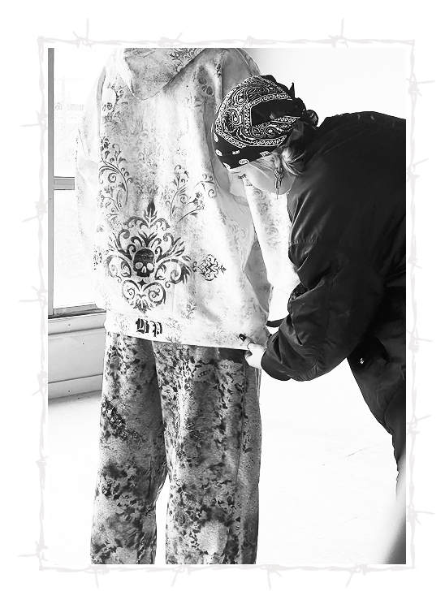

ADAPTABILITY
To what extent do you adapt your aesthetic for the sake of marketability?
I think that it's really important to stay, you know, close to the brand's aesthetic; which is still an edgy punk kind of look. But marketability is important because not everyone is willing to wear very Avant-garde styles. And it has to be something that you know, can sell and that people can wear in their day to day. And to have some variety, you know so some objects that are runway pieces are not necessarily what would be being mass produced and sold.